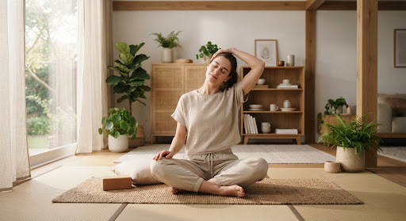

운동 · 따라 할 운동

미리보기 1분목·어깨 풀기 스트레칭
거북목·어깨 결림에 맞아요. 앉아서 굳은 목 앞쪽을 늘리고 어깨를 내려 줘요. 아프기 직전까지만 늘리고, 숨은 참지 않아요.
20분 · 동작 8개 · 의자·바닥·벽 하나면 돼요 · 뛰는 동작 없음
4초 들이쉬고 · 6초 내쉬기
목을 젖힐 때 들이쉬고, 제자리로 돌아오며 길게 내쉬어요. 머리 무게를 손에 맡기고 억지로 당기지 않아요.
동작 이름과 남은 시간을 말로 알려 줘요. 운동하면서 켜고 끌 수 있어요.
동작 순서
8개 · 20분- 1목 뒤를 길게 세워요1분
- 2어깨 위 근육을 좌우로 늘려요2분
- 3앞뒤로 크게 원을 그려요2분
- 4말린 어깨를 뒤로 펴요3분
- 5등 가운데를 조여 등을 펴요3분
- 6등을 둥글게 말았다 펴요3분
- 7벽에 팔을 대고 올렸다 내려요3분
- 8눈을 감고 천천히 숨 쉬며 마쳐요3분
운동 중 언제든 멈출 수 있어요